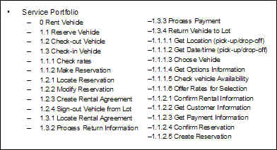
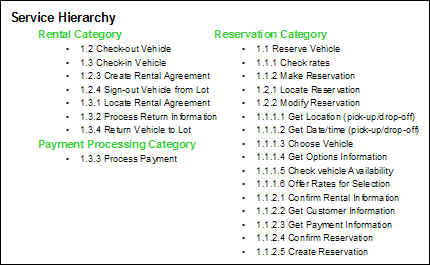
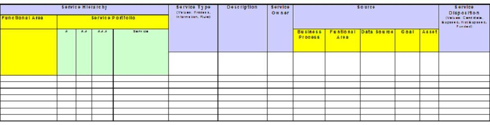
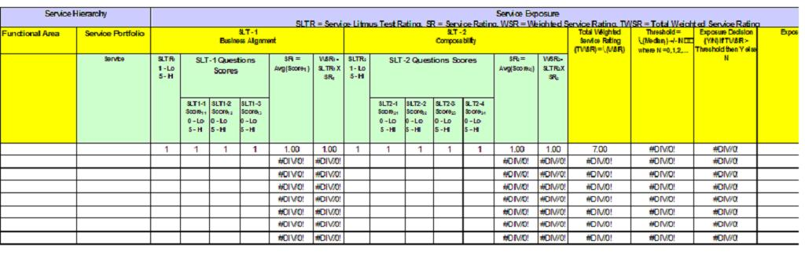

| Work Product (Artifact): Service Portfolio (ART 0583) |
 |
|
To document and manage the collection of services in scope as they are refined through the various stages of Service Identification. |
| Container Artifact | ||
|---|---|---|
| Main Description | The Service Portfolio captures information about the collection of services in scope as a whole, evolving through multiple iterations of service identification and refinement. Initially, we use the Service Portfolio to document the list of candidate services identified during service discovery activities. As functional areas are identified, we refine the Service Portfolio by categorizing the candidate services according to functional relationships into a service hierarchy. Later, we use the Service Portfolio to capture the list of services to be exposed as determined by service litmus tests, as well as the scope of exposure (e.g.: external, organization, business unit, or department) for those services. There is only a single instance of this artifact for a Service Model showing all services. |
||||||||
|---|---|---|---|---|---|---|---|---|---|
| Brief Outline |
This artifact consists of:
|
||||||||
| Notation | Service Portfolio

Figure 1: Service Portfolio - initial service list As the number of candidate services increases, an unstructured list can quickly become unmanageable. Therefore, as soon as possible a service classification scheme should be identified so that candidate services can be organized into groups within the classification hierarchy. The Service Hierarchy organizes services in the service portfolio using a uniform classification scheme. The classification scheme is often based on the functional areas identified during business domain decomposition. Notation for the Service Hierarchy is an outline format as shown in the example in Figure 2. 
Figure 2: Service Portfolio organized using a classification hierarchy While a simple list of service names can be a quick starting point, it will eventually be important to capture additional information about each service. This information can be subdivided into two types: information that supports service identification, and information that supports service specification.
 Table 2 Service Portfolio Template
Service: name of service  Table 3: Service Exposure Decision Template
Service: name of service |
||||||||
| Selected Representation | Preferred approach is to use SOMA-ME to document the Service Portfolio through its various iterations. The tool can generate an MS Word version of the artifact similar to the template provided. |
| Templates | |
|---|---|
| Examples |
| Impact of not having | Without this artifact it would be difficult to properly define and categorize services and to make exposure decisions. This could lead to gaps in the service portfolio, proliferation of unnecessary services, and inconsistencies in how services were exposed. |
|---|---|
| Reasons for not needing | This artifact is not needed if we do not need to externalize service descriptions at the edge of a significant organizational boundary (i.e. at the edge of a major line of business within an enterprise, or at the edge of the enterprise). |
| Representation Options | This information in this artifact can be captured using SOMA-ME modeling tool. SOMA-ME also aids in the generation of the artifact from the model created using the tool. In cases where SOMA-ME cannot be applied, the MS Word template should be used. |
| Content Lead | arsanjan@us.ibm.com |
|---|---|
| Change Date | Thu Mar 17 09:06:25 IST 2011 |
| Revisions | Baseline version November 2008 (based on previous Service Model elements) |
© Copyright IBM Corp. 1987, 2016 All Rights Reserved |